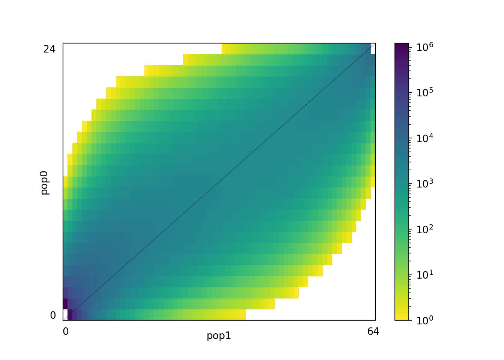
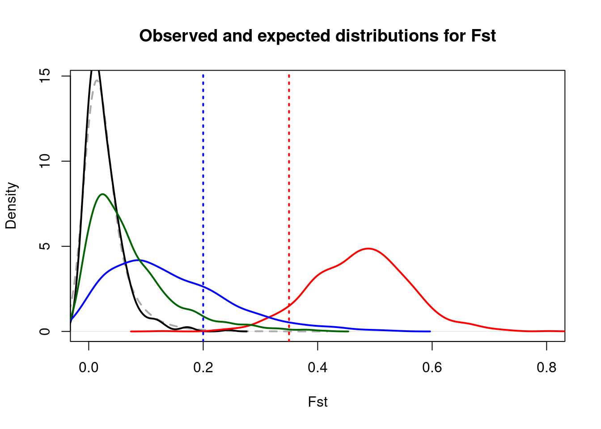
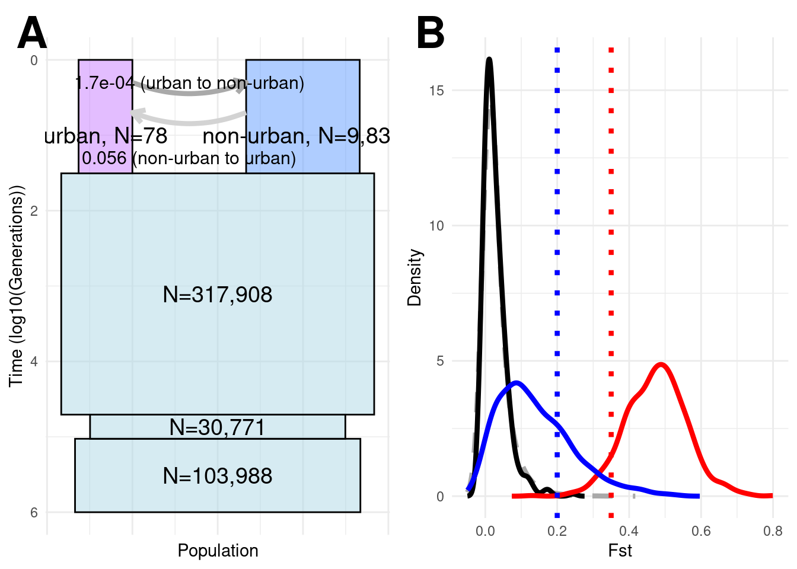
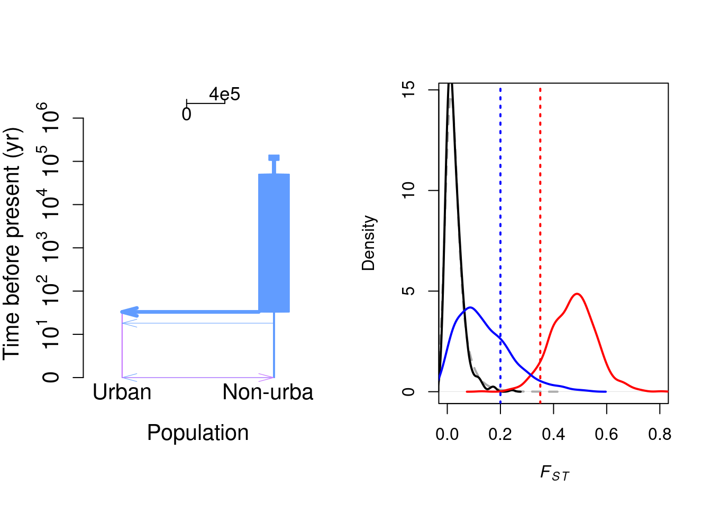

##keeping it as a loop in case more than one pair of populations
for input_file in Countryside_NewOrleans.ml
do
echo "37 99 unfolded" | cat - "$input_file" > temp && mv temp "$input_file"
doneDemographic_inference
We will combine all ML files for the urban/country comparison
We applied a threshold for missing individuals of 32/49 (urban) and 12/18 (countryside). So we can project to 64 and 24 alleles.
library(reticulate)
use_python("/home/yannbourgeois/mambaforge/bin/python3")import dadi
import glob
import os
# Directory containing the files
directory = './'
# Loop over all files in the directory that match a pattern (e.g., all .txt files)
for file_path in glob.glob(os.path.join(directory, '*ml')):
if os.path.isfile(file_path):
print(f"Processing file: {os.path.basename(file_path)}")
# Add your code here to process the file
fs = dadi.Spectrum.from_file(file_path) ###ml file but with a dadi header
#fs2=fs.fold()
fs3=fs.project([24,64])
#fs2.to_file("folded_spectrum.sfs")
fs3.to_file(f"projected_{os.path.basename(file_path)}")Processing file: Countryside_NewOrleans.mlimport matplotlib.pyplot as plt
dadi.Plotting.plot_single_2d_sfs(fs3,vmin=1)<matplotlib.colorbar.Colorbar object at 0x77cb4624efe0>plt.show()
plt.savefig("AFS_urban_country.jpg") #save as jpg
#sfs=read.table("country_urban_demo/folded_proj_spectrum.sfs")
#mat1 <- matrix(sfs[1,],nrow=29,ncol=69,byrow=TRUE)
#colnames(mat1)=paste("d0",seq(0,68),sep="_")
#rownames(mat1)=paste("d1",seq(0,28),sep="_")
#write.table(mat1,quote=F,sep="\t",file="country_urban_demo/Demography_jointMAFpop1_0.obs")for input_file in projected*ml
do
sed 1d $input_file | sed 2d > temp && mv temp $input_file
doneproj_a=65
proj_b=25
sfs=read.table("projected_Countryside_NewOrleans.ml")
mat1 <- matrix(sfs[1,],nrow=proj_b,ncol=proj_a,byrow=TRUE)
colnames(mat1)=paste("d0",seq(0,proj_a-1),sep="_")
rownames(mat1)=paste("d1",seq(0,proj_b-1),sep="_")
write.table(mat1,quote=F,sep="\t",file="Demography_jointDAFpop1_0.obs")For fastsimcoal, just add “1 observations” as a first row to the generated file, and two tabulations before the second row.
#!/bin/bash
#SBATCH --mem=32GB
#SBATCH --job-name=fsc
#SBATCH --time=12:00:00
#SBATCH --partition fast
#SBATCH --array=1-100
#SBATCH --nodes=1
#SBATCH --output=fsc%J.out
#SBATCH --error=fsc%J.err
i=$SLURM_ARRAY_TASK_ID
mkdir replicate_$i
cd replicate_$i
cp ../fsc28 .
cp ../Demography.* .
cp ../Demography_* .
./fsc28 -t Demography.tpl -n 10000 -d -e Demography.est -M -L 40 -q -c 12 --no-singletons
cd ..Now that we have a demographic scenario, we can perform simulations using ms and discoal. First, we use R to convert without suffering too much the FSC scenario into a ms command
###Best fastsimcoal model
##ANCSIZE2 ANCSIZE3 ANCSIZE4 NPOP1 NPOP2 TDIV MIG21 MIG12 TVAR3 TVAR4
##635816 61542 207976 155 19663 32 0.0563967 1.70E-04 50784 106177
mut <- 1.7e-9 # mutation rate per base per generation
No <- 155/2 # present diploid effective size for the Gulf Atlantic urban population (pop 1)
ms <- paste("88", # total number of sampled chromosomes
"1", # number of simulation replicates -- MUST BE "1"
"-t",4*No*mut*50000, # population mutation rate $\theta$ = 4*No*mu
"-I 2 64 24", # population structure
"-m 1 2",(4*No*1.7e-04), "-m 2 1", (4*No*0.0563967),
"-en 0 2",(19663/2)/No, # population size rescaling for pop 2 (country)
"-ej",32/(4*No),"1 2", #split
"-en",32/(4*No),2,(635816/2)/No, #GA ancestral pop size before split
"-en",50784/(4*No),2,(61542/2)/No,
"-en",106177/(4*No),2,(207976/2)/No)
ms
####Rough estimate if background selection: N0 reduced by 10 times, but times kept the same (so increase them by 10). Absolute migration rates stay the same (so effectively less gene flow)
ms_background <- paste("88", # total number of sampled chromosomes
"1", # number of simulation replicates -- MUST BE "1"
"-t",0.1*4*No*mut*50000, # population mutation rate $\theta$ = 4*No*mu
"-I 2 64 24", # population structure
"-m 1 2",(4*0.1*No*1.7e-04) , "-m 2 1", (4*0.1*No*0.0563967),
"-en 0 2",(19663/2)/No, # population size rescaling for pop 2 (urban)
"-ej",32/(4*0.1*No),"1 2", #split
"-en",32/(4*0.1*No),2,(635816/2)/No, #GA ancestral pop size before split
"-en",50784/(4*0.1*No),2,(61542/2)/No,
"-en",106177/(4*0.1*No),2,(207976/2)/No)
ms_background
####Assuming that only the urban population is under very strong drift
ms_background <- paste("88", # total number of sampled chromosomes
"1", # number of simulation replicates -- MUST BE "1"
"-t",0.1*4*No*mut*50000, # population mutation rate $\theta$ = 4*No*mu
"-I 2 64 24", # population structure
"-m 1 2",(4*0.1*No*1.7e-04) , "-m 2 1", (4*0.1*No*0.0563967),
"-en 0 2",(19663/2)/No, # population size rescaling for pop 2 (urban)
"-ej",32/(4*No),"1 2", #split
"-en",32/(4*No),2,(635816/2)/No, #GA ancestral pop size before split
"-en",50784/(4*No),2,(61542/2)/No,
"-en",106177/(4*No),2,(207976/2)/No)
ms_backgroundThe Python scripts launched in the commands below use sci-kit allel to estimate Bhatia’s Fst. Resources can be found here:
Estimate Fst from sci-kit https://scikit-allel.readthedocs.io/en/stable/stats/fst.html
cd Simulations
###Scenario without singletons, with 50kb length. Most up to date here!
rm Fst_Bhatia_distribution_neutral_50kb.txt
for i in {1..1000}
do
ms 88 1 -t 0.02635 -r 0.02635 50000 -I 2 64 24 -m 1 2 0.0527 -m 2 1 17.482977 -en 0 2 126.858064516129 -ej 0.103225806451613 1 2 -en 0.103225806451613 2 4102.03870967742 -en 163.81935483871 2 397.045161290323 -en 342.506451612903 2 1341.78064516129 | ./ms2vcf -length 50000 > simulation_neutral.vcf
python script_python_Fst.py >> Fst_Bhatia_distribution_neutral_50kb.txt
done
####Rough estimate if background selection: N0 reduced by 10 times, but times kept the same (so values increased by 10 here). Absolute migration rates stay the same (so less effective gene flow Nxm)
rm Fst_Bhatia_distribution_background_50kb.txt
for i in {1..1000}
do
ms 88 1 -t 0.002635 -r 0.002635 50000 -I 2 64 24 -m 1 2 0.00527 -m 2 1 1.7482977 -en 0 2 126.858064516129 -ej 1.03225806451613 1 2 -en 1.03225806451613 2 4102.03870967742 -en 1638.1935483871 2 397.045161290323 -en 3425.06451612903 2 1341.78064516129 | ./ms2vcf -length 50000 > simulation_neutral.vcf
python script_python_Fst.py >> Fst_Bhatia_distribution_background_50kb.txt
done
#####Rough estimate of very strong bottleneck only in the urban population
rm Fst_Bhatia_distribution_bottle_50kb.txt
for i in {1..1000}
do
ms 88 1 -t 0.002635 -r 0.002635 50000 -I 2 64 24 -m 1 2 0.00527 -m 2 1 1.7482977 -en 0 2 126.858064516129 -ej 0.103225806451613 1 2 -en 0.103225806451613 2 4102.03870967742 -en 163.81935483871 2 397.045161290323 -en 342.506451612903 2 1341.78064516129| ./ms2vcf -length 50000 > simulation_neutral.vcf
python script_python_Fst.py >> Fst_Bhatia_distribution_bottle_50kb.txt
done
###discoal only in population #0 (0-indexed, for Christ's sake...), so need to specify urban as the reference. Ensures that sweep is fixed.
###For recombination: 4*1.7e-9e-10*1582*50000 (just taking r=mu here)
###For mutation 4*1.7e-9*1582*50000
###-Sc is the onset of selection (backward). time, pop index, selection for each genotype. Fixed.
###SI specifies when selection starts (forward in time part). time, npop, freq in pop 1, freq in pop 2. Time can vary in MacSwan
###Sp position along the sequence
###SForceKeep is the same as SFC
rm Fst_Bhatia_distribution_selection.txt
for i in {1..1000}
do
./discoal/discoal 88 1 50000 -t 0.02635 -r 0.02635 -p 2 64 24 -m 0 1 0.0527 -m 1 0 17.482977 -en 0 1 126.858064516129 -ed 0.103225806451613 0 1 \
-en 0.103225806451613 1 4102.03870967742 -en 163.81935483871 1 397.045161290323 -en 342.506451612903 1 1341.78064516129 \
-a 155 -ws 0 -x 0.5 | ./ms2vcf -length 50000 > simulation_sweep.vcf
python script_python_Fst_selection.py >> Fst_Bhatia_distribution_selection.txt
donelibrary("grImport2")
library(grConvert)
library(data.table)
library(ggpubr)Loading required package: ggplot2library(ggforce)
library(gridGraphics)Loading required package: gridPBS=as.data.frame(fread("All_results_50kb_FST_PBS_ANGSD_countryside.txt",h=T))
PBS2<- PBS[PBS$midPos %% 25000 == 0 & PBS$Nsites>29999, ]
PBS=PBS2
mean(PBS$Fst12)[1] 0.02739604sd(PBS$Fst12)[1] 0.03296674quantile(PBS$Fst12,0.95) 95%
0.0932038 table=read.table("Simulations/Fst_Bhatia_distribution_neutral_50kb.txt",h=F)
sel=read.table("Simulations/Fst_Bhatia_distribution_selection.txt")
back=read.table("Simulations/Fst_Bhatia_distribution_background_50kb.txt",h=F)
bottle=read.table("Simulations/Fst_Bhatia_distribution_bottle_50kb.txt",h=F)
plot(density(PBS$Fst12,bw=0.018),type="l",col="darkgrey",lwd=2,lty=2,main="Observed and expected distributions for Fst",xlab="Fst",xlim=c(0,0.8))
points(density(table$V1,bw=0.01),xlim=c(0,1),lwd=2,type="l")
points(density(sel$V1),type="l",col="red",lwd=2)
points(density(back$V1),type="l",col="blue",lwd=2)
points(density(bottle$V1),type="l",col="darkgreen",lwd=2)
abline(v=0.2,lty=3,lwd=2,col="blue")
abline(v=0.35,lty=3,lwd=2,col="red")
density_Fst12 <- data.frame(x = density(PBS$Fst12, bw = 0.018)$x, y = density(PBS$Fst12, bw = 0.018)$y)
density_table <- data.frame(x = density(table$V1, bw = 0.01)$x, y = density(table$V1, bw = 0.01)$y)
density_sel <- data.frame(x = density(sel$V1)$x, y = density(sel$V1)$y)
density_back <- data.frame(x = density(back$V1)$x, y = density(back$V1)$y)
# Create ggplot object
Simulations=ggplot() +
# Add density for PBS$Fst12
geom_line(data = density_Fst12, aes(x = x, y = y), color = "darkgrey", linetype = "dashed", size = 1.5) +
# Add density for table$V1
geom_line(data = density_table, aes(x = x, y = y), color = "black", size = 1.5) +
# Add density for sel$V1 (red line)
geom_line(data = density_sel, aes(x = x, y = y), color = "red", size = 1.5) +
# Add density for back$V1 (blue line)
geom_line(data = density_back, aes(x = x, y = y), color = "blue", size = 1.5) +
# Add vertical lines at x = 0.2 and x = 0.35
geom_vline(xintercept = 0.2, linetype = "dotted", size = 1.5, color = "blue") +
geom_vline(xintercept = 0.35, linetype = "dotted", size = 1.5, color = "red") +
# Add labels and limits
labs(title = "", x = "Fst", y = "Density") +
xlim(-0.05, 0.8) +
# Minimal theme for a clean look
theme_minimal()Warning: Using `size` aesthetic for lines was deprecated in ggplot2 3.4.0.
ℹ Please use `linewidth` instead.# Parameters for the model
data <- data.frame(
Population = c("Ancestral1", "Ancestral2","Ancestral3","urban", "non-urban"),
Size = log10(c(207976/2,61542/2,635816/2, 156/2, 19664/2)), # Effective population sizes
Start_Time = log10(c(1000000,106177,50784, 32, 32)), # Start time of the population (e.g., divergence time)
End_Time = log10(c(106177,50784,32, 1, 1)) # End time of the population
)
# Plot the population size rectangles
Demography=ggplot() +
# Ancestral population as a rectangle
geom_rect(aes(xmin =-data$Size[1], xmax = data$Size[1], ymin = data$Start_Time[1], ymax = data$End_Time[1]),
fill = "lightblue", alpha = 0.5, color = "black") +
geom_text(aes(x = 0, y = (data$Start_Time[1]+data$Start_Time[2])/2, label = "N=103,988"), size = 5) +
geom_rect(aes(xmin = -data$Size[2], xmax = data$Size[2], ymin = data$Start_Time[2], ymax = data$End_Time[2]),
fill = "lightblue", alpha = 0.5, color = "black") +
geom_text(aes(x = 0, y = (data$Start_Time[2]+data$Start_Time[3])/2, label = "N=30,771"), size = 5) +
geom_rect(aes(xmin = -data$Size[3], xmax = data$Size[3], ymin = data$Start_Time[3], ymax = data$End_Time[3]),
fill = "lightblue", alpha = 0.5, color = "black") +
geom_text(aes(x = 0, y = (data$Start_Time[3]+data$Start_Time[4])/2, label = "N=317,908"), size = 5) +
# Pop1 as a rectangle
geom_rect(aes(xmin =-3-data$Size[4], xmax = -3, ymin = data$Start_Time[4], ymax = data$End_Time[4]),
fill = "#C77CFF", alpha = 0.5, color = "black") +
geom_text(aes(x = -3-data$Size[4]/2, y = 1, label = "urban, N=78"), size = 5) +
# Pop2 as a rectangle
geom_rect(aes(xmin = 1, xmax = 1+data$Size[5], ymin = data$Start_Time[5], ymax = data$End_Time[5]),
fill = "#619CFF", alpha = 0.5, color = "black") +
geom_text(aes(x = 1+data$Size[5]/2, y =1, label = "non-urban, N=9,832"), size = 5) +
# Add arrows for gene flow
geom_curve(aes(x = -3, y = log10(2), xend = 1, yend = log10(2)),
curvature = 0.2, arrow = arrow(length = unit(0.3, "cm")),
color = "darkgrey", size = 1.5) +
geom_text(aes(x = -1, y = log10(2), label = "1.7e-04 (urban to non-urban)"), color = "black", size = 4) +
geom_curve(aes(x = 1, y = log10(5), xend = -3, yend = log10(5)),
curvature = -0.2, arrow = arrow(length = unit(0.3, "cm")),
color = "lightgrey", size = 1.5) +
geom_text(aes(x = -1, y = log10(20), label = "0.056 (non-urban to urban)"), color = "black", size = 4) +
# Formatting the plot
scale_y_reverse() + # Reverse the y-axis to show time going downward
labs(title = "",
x = "Population", y = "Time (log10(Generations))") +
theme_minimal() +
theme(axis.text.x = element_blank(), axis.ticks.x = element_blank())
###Figure for publication
ggarrange(Demography, Simulations,
labels = c("A", "B"),font.label = list(size = 28, color = "black", face = "bold"),ncol = 2, nrow = 1)Warning: Removed 16 rows containing missing values or values outside the scale range
(`geom_line()`).Warning: Removed 40 rows containing missing values or values outside the scale range
(`geom_line()`).Warning: Removed 34 rows containing missing values or values outside the scale range
(`geom_line()`).
library(POPdemog) ###Very useful to plot the scenario
par(mfrow=c(1,2))
PlotMS(input.cmd = "ms 88 1 -t 0.02635 -I 2 64 24 -m 1 2 0.0527 -m 2 1 17.482977 -en 0 2 126.858064516129 -ej 0.103225806451613 1 2 -en 0.103225806451613 2 4102.03870967742 -en 163.81935483871 2 397.045161290323 -en 342.506451612903 2 1341.78064516129",type="ms",time.scale="log10year",size.scale="linear",N4=310,gen=1,col.pop=c("#C77CFF","#619CFF"),pops=c("Urban", "Non-urban"),cex.lab =1.3, cex.axis = 1.3,lwd.arrow = 3)There are 4 time events for 2 populationsread N and g, done!read m, done!read pos and update, done!demographic initiation, done!plot initiation, done!NRuler("top", Nsize=c(0, 16e5), Nlab=c("","4e5"), N4=310, size.scale="linear", lwd=1, cex=1.1)Warning in NRuler("top", Nsize = c(0, 1600000), Nlab = c("", "4e5"), N4 = 310,
: linear.scale is in the default value: 0.2plot(density(PBS$Fst12,bw=0.018),type="l",col="darkgrey",lwd=2,lty=2,main="",xlab=expression(italic(F[ST])),xlim=c(0,0.8),cex=1.3)
points(density(table$V1,bw=0.01),xlim=c(0,1),lwd=2,type="l")
points(density(sel$V1),type="l",col="red",lwd=2)
points(density(back$V1),type="l",col="blue",lwd=2)
abline(v=0.2,lty=3,lwd=2,col="blue")
abline(v=0.35,lty=3,lwd=2,col="red")